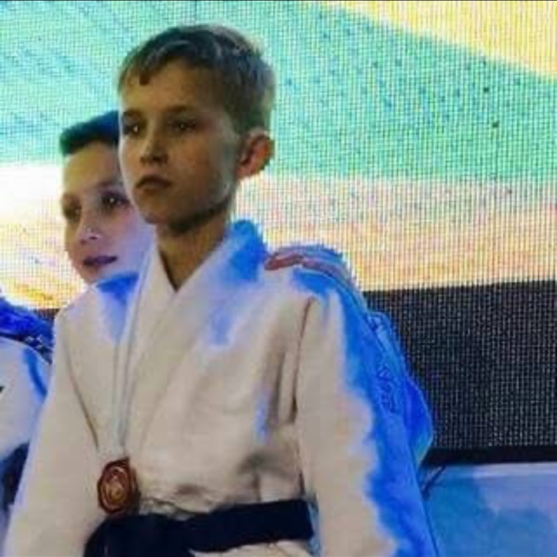

November 2015 · Two bronze medals · Córdoba, Argentina
Pan American and South American Youth Championships
One bronze in each tournament during the same competition weekend.
FUN FACTS
Outside of work, I spend time on the mat, outdoors, and exploring new places.
LIFE ON THE MAT
I started judo at age six and still train today. As a teenager, I also volunteered to teach younger students the fundamentals.

November 2015 · Two bronze medals · Córdoba, Argentina
One bronze in each tournament during the same competition weekend.
June 26–27, 2015 · Bronze medal
Intermediate 2 Male, under 34 kg · Samir and Lev Judo.
April 11–12, 2015 · Bronze medal
Intermediate 2 Male, under 34 kg · Samir and Lev Judo.
2014 · Silver medal
Boys 9–10 years, 32 kg · Samir Judo.
I enjoy getting outdoors, hiking, and camping. I like situations that reward preparation and adapting when plans change.
I enjoy seeing new places and meeting people from different backgrounds. Traveling keeps me curious and comfortable in unfamiliar environments.
CONTACT
If you would like to discuss an IT support opportunity, you can reach me here.